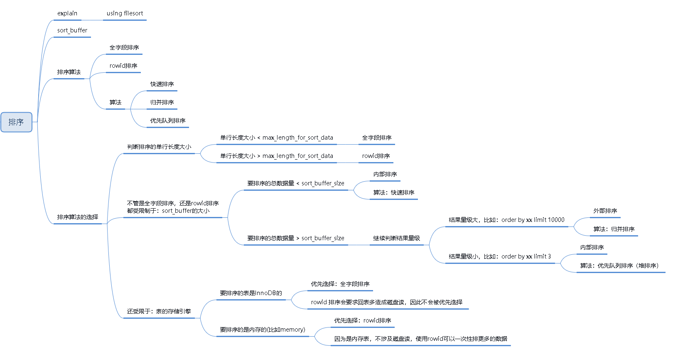
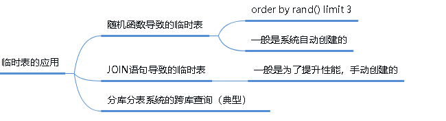
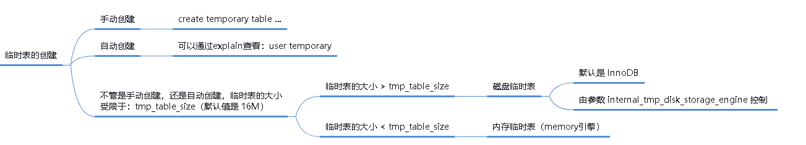
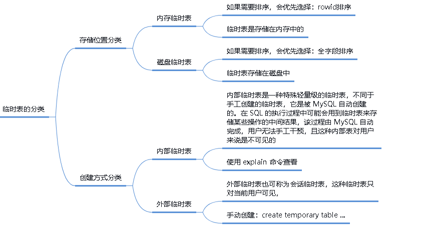
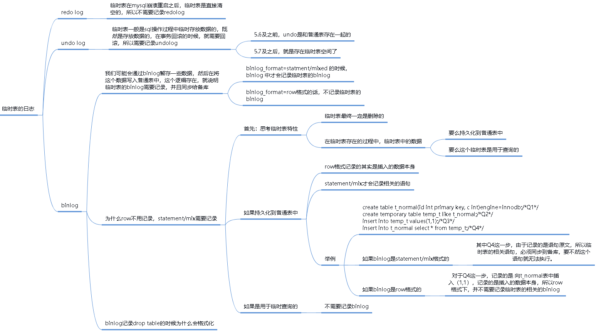
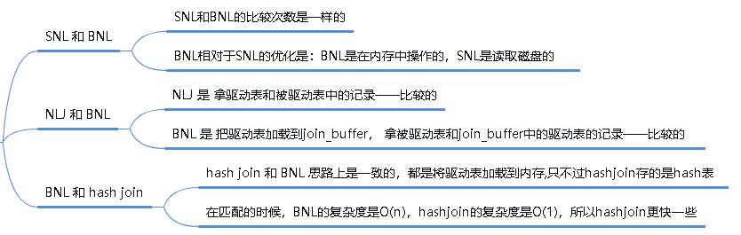

mysql的临时表从入门到入土
mysql临时表的xmind，点击下载
#### 临时表相关
- 17 | 如何正确地显示随机消息？
- 34 | 到底可不可以使用join？
- 35 | join语句怎么优化？
- 36 | 为什么临时表可以重名？
- 37 | 什么时候会使用内部临时表？
- 43 | 要不要使用分区表？
本文的内容，是mysql中关于sql优化，比较重要的一部分内容，涉及到：
- mysql的排序：就是我们日常sql语句中经常写的 order by
还涉及到：
- 临时文件，为什么会涉及临时文件，因为：排序的时候会有内部排序和外部排序
- 排序的记录比较多的时候，就会用到外部排序，外部排序就会用到临时文件，使用归并排序算法
还涉及到：
- JOIN 语句的优化：就是我们日常开发中 a left join b 等等
- 临时表，因为涉及到JOIN的优化
这些都是很日常的开发工作中，就会用到的部分，所以这篇文章要好好掌握以下，对实战的能力提升很大
mysql的排序
这部分在 Mysql的索引从入门到入土 已经介绍过了，这里我再总结一下
在日常的开发过程中，经常会使用order by语句，那么排序的原理是什么呢？
排序分为两种情况
- 排序的字段有索引
- 排序的字段没有索引
有索引的排序，会直接使用索引，因为索引是有序的，所以没啥可说的。性能很高
主要讨论没有索引的排序：没有索引的排序，相对来说复杂一下。
一个语句是否使用了排序，可以通过：explain命令查看，结果中有 Using filesort ，说明mysql无法利用索引进行排序，只能利用排序算法进行排序，会消耗额外的位置
MySQL 会给每个线程分配一块内存用于排序，称为 sort_buffer。
sort_buffer既然是内存区域，就不可能无限的扩大，是可以通过参数sort_buffer_size控制的
内部排序
如果要排序的数据量小于 sort_buffer_size，排序就在内存中完成。
这叫做：内部排序，有两种算法：快排和优先队列排序(也叫堆排序)
外部排序
如果要排序的数据量 大于 sort_buffer_size，内存放不下，则不得不利用磁盘临时文件辅助排序。
这叫做：外部排序，算法是归并排序
全字段排序
是指将 排序的字段和要返回的字段，全部放入内存，这样排序完之后，就不需要回表了。性能比较高
比如：
select name,city,age from t order by name desc;如果内存放得下，就将：name，city，age 全都放入内存，在内存中使用 name 排好序，直接返回。避免了回表
rowId排序
如果 MySQL 认为排序的单行长度太大（通过参数：max_length_for_sort_data），就不能将 排序的字段和要返回的字段 都放在内存中了
只能将 排序的字段和要返回的字段所在记录的id 放在内存中进行排序
排序完之后，在通过：要返回的字段所在记录的id 进行回表，取出：要返回的字段
比如：
select name,prov,city,address,age from t order by name desc;要返回的字段：name,prov,city,address,age 太大了，内存放不下，就会将 id 和 name 放在内存中，然后通过name排序
排序完成之后，在通过 id 回表查找 name,prov,city,address,age 返回给客户端
全字段排序 VS rowid 排序
- MySQL 如果觉得排序内存太小，会影响排序效率，会采用 rowid 排序算法，这样排序过程中一次可以排序更多行，但是需要回表
- MySQL 认为内存足够大，会优先选择全字段排序，把需要的字段都放到 sort_buffer 中，可以减少回表
排序算法的选择
判断排序的单行字段大小
- 如果 单行长度大小 < max_length_for_sort_data ：全字段排序
- 如果 单行长度大小 > max_length_for_sort_data ：rowid排序
不管是全字段排序，还是rowid排序都受限制于：sort_buffer 的大小
- 如果：要排序的总数据量 < sort_buffer_size ： 内部排序，使用快速排序算法
- 如果 ：要排序的总数据量 > sort_buffer_size：
- 继续判断结果量级，结果量级大，比如：order by xx limit 10000：外部排序，使用归并排序算法
- 结果量级小，比如：order by xx limit 3：内部排序，使用 优化队列算法（堆排序）
表的存储引擎
- 要排序的表是InnoDB的： 优先选择：全字段排序，rowid 排序会要求回表多造成磁盘读，因此不会被优先选择
- 要排序的是内存的(比如memory)： 优先选择：rowid排序，因为是内存表，不涉及磁盘读，使用rowid可以一次性排更多的数据
上面我们说过，当排序的记录数比较多，sort_buffer 内存放不下，会使用临时文件辅助排序
接下老我们就看看：Mysql 中的临时文件
Mysql的临时文件
临时文件和临时表是不一样的东西！
临时文件，一般是在排序过程中，内存放不下，会将数据存在磁盘中，这时，存在磁盘中的文件就是临时文件。排序完成之后，就删除了。
关于临时文件，这里不过多的解释。
我们来看看临时表吧
Mysql的临时表
什么是临时表
有的人可能会认为，临时表就是内存表。
但是，这两个概念可是完全不同的。
内存表，指的是使用 Memory 引擎的表，建表语法是 create table … engine=memory。这种表的数据都保存在内存里，系统重启的时候会被清空，但是表结构还在。除了这两个特性看上去比较“奇怪”外，从其他的特征上看，它就是一个正常的表。
临时表，可以使用各种引擎类型 。如果是使用 InnoDB 引擎或者 MyISAM 引擎的临时表，写数据的时候是写到磁盘上的。当然，临时表也可以使用 Memory 引擎。
临时表的特性
通过一个实例，来了解临时表的特性
| session A | session B |
|---|---|
| create temporary table t (c int) engine=myisam; | |
| show create table t; (Table ‘t’ doesn’t exist) |
|
| create table t (id int primary key) engine=innodb; | |
| show create table t; //create temporary table t (c int) engine=myisam; |
|
| show tables; //只显示普通表t |
|
| insert into t value (1); select * from t; //返回1 |
|
| select * from t; //Empty Set |
临时表在使用上有以下几个特点：
- 建表语法是 create temporary table …
- 一个临时表只能被创建它的 session 访问，对其他线程不可见。所以，图中 session A 创建的临时表 t，对于 session B 就是不可见的。
- 临时表可以与普通表同名。
- session A 内有同名的临时表和普通表的时候，show create 语句，以及增删改查语句访问的是临时表。
- show tables 命令不显示临时表。
哪里会用到临时表
怎么创建临时表
临时表的分类
临时表的日志
JOIN语句
JOIN的基本概念
- 笛卡尔积
- 隐式内连接
- 等值连接
- 非等值连接
- 自连接
- 外连接
- 左外连接
- 右外连接
- 全外连接
- 内连接
- 交叉连接
可以参考：mysql的连接查询.md 一文，这里不再赘述
JOIN语句的分类
数据准备
- 准备 表t1：有索引a，100条记录
- 准备 表t2：有索引a，1000条记录
CREATE TABLE `t2` (
`id` int(11) NOT NULL,
`a` int(11) DEFAULT NULL,
`b` int(11) DEFAULT NULL,
PRIMARY KEY (`id`),
KEY `a` (`a`)
) ENGINE=InnoDB;
drop procedure idata;
delimiter ;;
create procedure idata()
begin
declare i int;
set i=1;
while(i<=1000)do
insert into t2 values(i, i, i);
set i=i+1;
end while;
end;;
delimiter ;
call idata();
create table t1 like t2;
insert into t1 (select * from t2 where id<=100);Index Nested-Loop Join（NLJ）
mysql> explain select * from t1 straight_join t2 on (t1.a=t2.a);
+----+-------------+-------+------------+------+---------------+------+---------+---------+------+----------+-------------+
| id | select_type | table | partitions | type | possible_keys | key | key_len | ref | rows | filtered | Extra |
+----+-------------+-------+------------+------+---------------+------+---------+---------+------+----------+-------------+
| 1 | SIMPLE | t1 | NULL | ALL | a | NULL | NULL | NULL | 100 | 100.00 | Using where |
| 1 | SIMPLE | t2 | NULL | ref | a | a | 5 | zs.t1.a | 1 | 100.00 | NULL |
+----+-------------+-------+------------+------+---------------+------+---------+---------+------+----------+-------------+
2 rows in set, 1 warning (0.00 sec)执行过程
- 从表 t1 中读入一行数据 R；
- 从数据行 R 中，取出 a 字段到表 t2 里去查找；
- 取出表 t2 中满足条件的行，跟 R 组成一行，作为结果集的一部分；
- 重复执行步骤 1 到 3，直到表 t1 的末尾循环结束。
这个过程是先遍历表 t1，然后根据从表 t1 中取出的每行数据中的 a 值，去表 t2 中查找满足条件的记录。并且可以用上表t2的索引，所以我们称之为“Index Nested-Loop Join”，简称 NLJ。
Simple Nested-Loop Join（SNL）
mysql> explain select * from t1 straight_join t2 on (t1.a=t2.b);
+----+-------------+-------+------------+------+---------------+------+---------+------+------+----------+----------------------------------------------------+
| id | select_type | table | partitions | type | possible_keys | key | key_len | ref | rows | filtered | Extra |
+----+-------------+-------+------------+------+---------------+------+---------+------+------+----------+----------------------------------------------------+
| 1 | SIMPLE | t1 | NULL | ALL | a | NULL | NULL | NULL | 100 | 100.00 | NULL |
| 1 | SIMPLE | t2 | NULL | ALL | NULL | NULL | NULL | NULL | 1000 | 10.00 | Using where; Using join buffer (Block Nested Loop) |
+----+-------------+-------+------------+------+---------------+------+---------+------+------+----------+----------------------------------------------------+
2 rows in set, 1 warning (0.00 sec)由于表 t2 的字段 b 上没有索引，因此再用图 2 的执行流程时，每次到 t2 去匹配的时候，就要做一次全表扫描。
你可以先设想一下这个问题，继续使用图 2 的算法，是不是可以得到正确的结果呢？如果只看结果的话，这个算法是正确的，而且这个算法也有一个名字，叫做“Simple Nested-Loop Join”。
但是，这样算来，这个 SQL 请求就要扫描表 t2 多达 100 次，总共扫描 100*1000=10 万行。
效率极低。
但是mysql并没有使用这种算法，因为这种算法效率极低，通过执行计划也可以看到：Using where; Using join buffer (Block Nested Loop)
mysql使用的是 Block Nested Loop
Block Nested Loop Join（BNL）
mysql> explain select * from t1 straight_join t2 on (t1.a=t2.b);
+----+-------------+-------+------------+------+---------------+------+---------+------+------+----------+----------------------------------------------------+
| id | select_type | table | partitions | type | possible_keys | key | key_len | ref | rows | filtered | Extra |
+----+-------------+-------+------------+------+---------------+------+---------+------+------+----------+----------------------------------------------------+
| 1 | SIMPLE | t1 | NULL | ALL | a | NULL | NULL | NULL | 100 | 100.00 | NULL |
| 1 | SIMPLE | t2 | NULL | ALL | NULL | NULL | NULL | NULL | 1000 | 10.00 | Using where; Using join buffer (Block Nested Loop) |
+----+-------------+-------+------------+------+---------------+------+---------+------+------+----------+----------------------------------------------------+
2 rows in set, 1 warning (0.00 sec)当被驱动表无法使用索引的时候，算法的流程是这样的：
把表 t1 的数据读入线程内存 join_buffer 中，由于我们这个语句中写的是 select *，因此是把整个表 t1 放入了内存；
扫描表 t2，把表 t2 中的每一行取出来，跟 join_buffer 中的数据做对比，满足 join 条件的，作为结果集的一部分返回。
如果驱动表的数据太多，join_buffer放不下怎么办？
join_buffer 的大小是由参数 join_buffer_size 设定的，默认值是 256k。
如果放不下表 t1 的所有数据话，策略很简单，就是分段放。
执行过程就变成了：
- 扫描表 t1，顺序读取数据行放入 join_buffer 中，放完第 88 行 join_buffer 满了，继续第 2 步；
- 扫描表 t2，把 t2 中的每一行取出来，跟 join_buffer 中的数据做对比，满足 join 条件的，作为结果集的一部分返回；
- 清空 join_buffer；
- 继续扫描表 t1，顺序读取第 88 行之后的12 行数据放入 join_buffer 中，继续执行第 2 步。
这个流程才体现出了这个算法名字中“Block”的由来，表示“分块去 join”
hash join（mysql 8.0 ）
mysql> explain select * from t1 straight_join t2 on (t1.a=t2.b);
+----+-------------+-------+------------+------+---------------+------+---------+------+------+----------+--------------------------------------------+
| id | select_type | table | partitions | type | possible_keys | key | key_len | ref | rows | filtered | Extra |
+----+-------------+-------+------------+------+---------------+------+---------+------+------+----------+--------------------------------------------+
| 1 | SIMPLE | t1 | NULL | ALL | a | NULL | NULL | NULL | 100 | 100.00 | NULL |
| 1 | SIMPLE | t2 | NULL | ALL | NULL | NULL | NULL | NULL | 1000 | 10.00 | Using where; Using join buffer (hash join) |
+----+-------------+-------+------------+------+---------------+------+---------+------+------+----------+--------------------------------------------+
2 rows in set, 1 warning (0.00 sec)同样的语句，在mysql8.0版本中，就不是使用 BNL了，而是使用 hash join
hash join 是mysql 8 的优化，在8之前这种语句使用的是：BNL，在8之后是 hash join
hash join 和 BNL 思路上是一致的
- 将 驱动表 加载到内存
- BNL：所需的字段放在join_buffer中
- hash join： 在 join_buffer中存的是一个hash表，key是将连接字段（join的字段）hash后的结果；value是所需的字段
- join_buffer不够用的时候
- BNL：分块加载
- hash join：存到磁盘上
- 读取 被驱动表 中记录与内存中的驱动表作比较
- BNL：遍历内存中的驱动表，时间复杂度是 O(n)
- hash join：被驱动表的记录先hash，然后去内存中的hash表查找，时间复杂度是 O(1)
- 返回结果集
个人理解：主要是匹配的过程中，hash比BNL时间复杂度更好，所以更快
它们之间的区别和联系
是否可以使用JOIN语句
能不能使用 join 语句？
如果可以使用 Index Nested-Loop Join 算法，也就是说可以用上被驱动表上的索引，其实是没问题的；
如果使用 Block Nested-Loop Join 算法，扫描行数就会过多。尤其是在大表上的 join 操作，这样可能要扫描被驱动表很多次，会占用大量的系统资源（比较次数多，CPU也会升高）。所以这种 join 尽量不要用。
所以你在判断要不要使用 join 语句时，就是看 explain 结果里面，Extra 字段里面有没有出现“Block Nested Loop”字样。
驱动表应该怎么选
先说结论：应该选择小表作为驱动表
在 NLJ 的情况下
在 NLJ 的情况下，驱动表走全表扫描，被驱动表走索引树搜索
假设被驱动表的行数是 M，每次在驱动表查一行数据，要先搜索索引 a，在搜索主键索引。
每次搜索一棵树近似复杂度是 以2为底的M的对数，记为： log2M
所以在被驱动表上查一行数据的时间复杂度就是： 2 * log2M（因为走了2次索引，一次普通索引，一次主键索引）
假设驱动表的行数是 N，执行过程就要扫描驱动表的 N 行，然后对于每一行，都去被驱动表上匹配一次。
因此整个执行过程，近似复杂度为：N + N * 2 * log2M
显然，N 对扫描行数的影响更大，因此应该让小表来做驱动表。
如果你没觉得这个影响有那么“显然”， 可以这么理解：
N 扩大 1000 倍的话，扫描行数就会扩大 1000 倍；
而 M 扩大 1000 倍，扫描行数扩大不到 10 倍。
总结：在 NLJ 的情况下，需要选择小表作为驱动表。
在 BNL 的情况下
在 BNL 的情况下，驱动表走全表扫描，被驱动表也是走全表扫描
假设小表的行数是 N，大表的行数是 M
在 BNL 算法，会首先把 驱动表加载到内存中，然后扫描被驱动表，扫描一行，就和内存中的驱动表做一次匹配，所以是：
- 两次全表扫描：M + N
- 内存中的判断次数是 M * N
可以看到，调换这两个算式中的 M 和 N 没差别，因此这时候无论选择哪个表做驱动表，执行耗时是一样的。
但是！！！如果驱动表的数据比较多，我们知道此时需要分块join
此时假设，驱动表的数据行数是 N，需要分 K 段才能完成算法流程，被驱动表的数据行数是 M
注意，这里的 K 不是常数，N 越大 K 就会越大
所以：对驱动表的扫描次数是N； 对被驱动表的扫描次数是：K * M，此时：
- 总的扫描次数是：N + K * M
- 总的内存判断次数是： N * M
显然，内存判断次数是不受选择哪个表作为驱动表影响的。而考虑到扫描行数，在 M 和 N 大小确定的情况下，K 小一些，也就是分段小一些，整个算式的结果会更小。
为了让分段更小，有两个办法：
- 选择小表作为驱动表
- 增大 join_buffer_size
总结
如果要使用 join，应该选择大表做驱动表还是选择小表做驱动表？
- 如果是 Index Nested-Loop Join 算法，应该选择小表做驱动表；
- 如果是 Block Nested-Loop Join 算法：
- 在 join_buffer_size 足够大的时候，是一样的；
- 在 join_buffer_size 不够大的时候（这种情况更常见），应该选择小表做驱动表。
所以，这个问题的结论就是，总是应该使用小表做驱动表。
什么是小表
这里所说的小表，并不是说表的数据量是多还是少；
而是作为 join 的数据量的大小。
比如下面两个语句：
select * from t1 straight_join t2 on (t1.b=t2.b) where t2.id<=50;
select * from t2 straight_join t1 on (t1.b=t2.b) where t2.id<=50;两个语句使用 b 字段进行 join，所以都用不上索引。
但如果是用第二个语句的话，join_buffer 只需要放入 t2 的前 50 行，显然是更好的。所以这里，“t2 的前 50 行”是那个相对小的表，也就是“小表”。
继续看另一个例子
select t1.b,t2.* from t1 straight_join t2 on (t1.b=t2.b) where t2.id<=100;
select t1.b,t2.* from t2 straight_join t1 on (t1.b=t2.b) where t2.id<=100;两个语句都是使用 b 字段进行 join，所以都用不上索引。并且 表t1 和 表t2 的数据量都是100行。
但是，这两条语句每次查询放入 join_buffer 中的数据是不一样的：
- 表 t1 只查字段 b，因此如果把 t1 放到 join_buffer 中，则 join_buffer 中只需要放入 b 的值；
- 表 t2 需要查所有的字段，因此如果把表 t2 放到 join_buffer 中的话，就需要放入三个字段 id、a 和 b。
所以这里，我们应该选择表 t1 作为驱动表。也就是说在这个例子里，“只需要一列参与 join 的表 t1”是那个相对小的表。
JOIN语句的优化
在上文，我们知道了什么时候可以使用 JOIN 语句，以及 JOIN 语句是怎么的内部执行逻辑，这一节我们来看一下怎么优化 JOIN 语句。
数据准备
- 表 t1 里，插入了 1000 行数据，每一行的 a=1001-id 的值。也就是说，表 t1 中字段 a 是逆序的
- 表 t2 中插入了 100 万行数据
create table t1(id int primary key, a int, b int, index(a));
create table t2 like t1;
drop procedure idata;
delimiter ;;
create procedure idata()
begin
declare i int;
set i=1;
while(i<=1000)do
insert into t1 values(i, 1001-i, i);
set i=i+1;
end while;
set i=1;
while(i<=1000000)do
insert into t2 values(i, i, i);
set i=i+1;
end while;
end;;
delimiter ;
call idata();Multi-Range Read （MRR）优化
什么是MRR优化
当回表的数据量比较多的时候，将需要回表的主键id先暂存到内存中，然后进行排序，将排序后的id在进行回表，此时id是顺序的，此时回表，近似于磁盘的顺序读。可以提高性能
MRR优化默认是关闭的，开启：set optimizer_switch=”mrr_cost_based=off”
如果使用了 order by 语句，MRR就不生效了
Batched Key Access（BKA）
BKA 算法，其实就是对 NLJ 算法的优化
——————————-
mysql
临时文件和临时表
临时表：为什么这里的临时表使用的引擎是memory？ A：tmp_table_size 这个配置限制了内存临时表的大小，默认值是 16M。如果临时表大小超过了 tmp_table_size，那么内存临时表就会转成磁盘临时表；磁盘临时表使用的引擎默认是 InnoDB，是由参数 internal_tmp_disk_storage_engine 控制的。而内存临时表使用的是memory引擎
-- 创建表t2，主键索引和字段a的普通索引
CREATE TABLE `t2` (
`id` int(11) NOT NULL,
`a` int(11) DEFAULT NULL,
`b` int(11) DEFAULT NULL,
PRIMARY KEY (`id`),
KEY `a` (`a`)
) ENGINE=InnoDB;
-- 通过存储过程，初始化1000条记录
drop procedure idata;
delimiter ;;
create procedure idata()
begin
declare i int;
set i=1;
while(i<=1000)do
insert into t2 values(i, i, i);
set i=i+1;
end while;
end;;
delimiter ;
call idata();
-- 创建表t1，主键索引和字段a的普通索引
-- 初始化100条记录
create table t1 like t2;
insert into t1 (select * from t2 where id<=100)驱动表使用索引字段关联；被驱动表使用索引关联；查所有字段
mysql> explain select * from t1 straight_join t2 on t1.a = t2.a;
+----+-------------+-------+------------+------+---------------+------+---------+---------+------+----------+-------------+
| id | select_type | table | partitions | type | possible_keys | key | key_len | ref | rows | filtered | Extra |
+----+-------------+-------+------------+------+---------------+------+---------+---------+------+----------+-------------+
| 1 | SIMPLE | t1 | NULL | ALL | a | NULL | NULL | NULL | 100 | 100.00 | Using where |
| 1 | SIMPLE | t2 | NULL | ref | a | a | 5 | zs.t1.a | 1 | 100.00 | NULL |
+----+-------------+-------+------------+------+---------------+------+---------+---------+------+----------+-------------+
2 rows in set, 1 warning (0.00 sec)为什么驱动表的字段a有索引，为啥不走索引呢？
- 原因可能是因为没有过滤条件；
驱动表使用索引字段关联；被驱动表使用索引关联；查所有字段；驱动表添加过滤条件
mysql> explain select * from t1 straight_join t2 on t1.a = t2.a where t1.a > 50;
+----+-------------+-------+------------+------+---------------+------+---------+---------+------+----------+-------------+
| id | select_type | table | partitions | type | possible_keys | key | key_len | ref | rows | filtered | Extra |
+----+-------------+-------+------------+------+---------------+------+---------+---------+------+----------+-------------+
| 1 | SIMPLE | t1 | NULL | ALL | a | NULL | NULL | NULL | 100 | 50.00 | Using where |
| 1 | SIMPLE | t2 | NULL | ref | a | a | 5 | zs.t1.a | 1 | 100.00 | NULL |
+----+-------------+-------+------------+------+---------------+------+---------+---------+------+----------+-------------+
2 rows in set, 1 warning (0.00 sec)为什么驱动表的字段a有索引，而且添加了过滤条件，还是不走索引呢？
- 因为是查询的 * ，即使走了索引 a，还是需要回表，优化器认为还不如直接走全表呢
- 因为过滤条件过滤的数据比较少，只过滤了50%，优化器认为全表扫描比走索引更快
驱动表使用索引字段关联；被驱动表使用索引关联；查驱动表的主键id；驱动表添加过滤条件
mysql> explain select t1.id from t1 straight_join t2 on t1.a = t2.a where t1.a > 50;
+----+-------------+-------+------------+-------+---------------+------+---------+---------+------+----------+--------------------------+
| id | select_type | table | partitions | type | possible_keys | key | key_len | ref | rows | filtered | Extra |
+----+-------------+-------+------------+-------+---------------+------+---------+---------+------+----------+--------------------------+
| 1 | SIMPLE | t1 | NULL | range | a | a | 5 | NULL | 50 | 100.00 | Using where; Using index |
| 1 | SIMPLE | t2 | NULL | ref | a | a | 5 | zs.t1.a | 1 | 100.00 | Using index |
+----+-------------+-------+------------+-------+---------------+------+---------+---------+------+----------+--------------------------+
2 rows in set, 1 warning (0.00 sec)驱动表的字段a有索引，而且添加了过滤条件，查询驱动表的主键id，会用到覆盖索引，不回表了，所以走了索引；
驱动表使用索引字段关联；被驱动表使用索引关联；查所有字段；驱动表添加过滤条件，大范围过滤
mysql> explain select * from t1 straight_join t2 on t1.a = t2.a where t1.a > 90;
+----+-------------+-------+------------+-------+---------------+------+---------+---------+------+----------+-----------------------+
| id | select_type | table | partitions | type | possible_keys | key | key_len | ref | rows | filtered | Extra |
+----+-------------+-------+------------+-------+---------------+------+---------+---------+------+----------+-----------------------+
| 1 | SIMPLE | t1 | NULL | range | a | a | 5 | NULL | 10 | 100.00 | Using index condition |
| 1 | SIMPLE | t2 | NULL | ref | a | a | 5 | zs.t1.a | 1 | 100.00 | NULL |
+----+-------------+-------+------------+-------+---------------+------+---------+---------+------+----------+-----------------------+
2 rows in set, 1 warning (0.00 sec)驱动表的字段a有索引，而且添加了过滤条件，虽然查询的是所有字段，需要回表，但是因为过滤条件过滤90%的数据，优化器因为回表比全表扫描代价低
以上的情况适用于 t1 的单表查询也是一样的，所以总结下来 join查询其实就是多个单表查询，然后汇总在一起；
-- ALL
explain select * from t1;
-- ALL
explain select * from t1 where t1.a > 50;
-- range
explain select * from t1 where t1.a > 90;
-- range
explain select id from t1 where t1.a > 50;mysql5
- Using where; Using join buffer (Block Nested Loop)
mysql> explain select * from t1 straight_join t2 on t1.a = t2.b;
+----+-------------+-------+------------+------+---------------+------+---------+------+------+----------+----------------------------------------------------+
| id | select_type | table | partitions | type | possible_keys | key | key_len | ref | rows | filtered | Extra |
+----+-------------+-------+------------+------+---------------+------+---------+------+------+----------+----------------------------------------------------+
| 1 | SIMPLE | t1 | NULL | ALL | a | NULL | NULL | NULL | 100 | 100.00 | NULL |
| 1 | SIMPLE | t2 | NULL | ALL | NULL | NULL | NULL | NULL | 1000 | 10.00 | Using where; Using join buffer (Block Nested Loop) |
+----+-------------+-------+------------+------+---------------+------+---------+------+------+----------+----------------------------------------------------+
2 rows in set, 1 warning (0.06 sec)mysql8
- Using where; Using join buffer (hash join)
mysql> explain select * from t1 straight_join t2 on t1.a = t2.b;
+----+-------------+-------+------------+------+---------------+------+---------+------+------+----------+--------------------------------------------+
| id | select_type | table | partitions | type | possible_keys | key | key_len | ref | rows | filtered | Extra |
+----+-------------+-------+------------+------+---------------+------+---------+------+------+----------+--------------------------------------------+
| 1 | SIMPLE | t1 | NULL | ALL | a | NULL | NULL | NULL | 100 | 100.00 | NULL |
| 1 | SIMPLE | t2 | NULL | ALL | NULL | NULL | NULL | NULL | 1000 | 10.00 | Using where; Using join buffer (hash join) |
+----+-------------+-------+------------+------+---------------+------+---------+------+------+----------+--------------------------------------------+
2 rows in set, 1 warning (0.00 sec)使用order by的话，就不会使用MRR了
mysql> set optimizer_switch="mrr_cost_based=off";
Query OK, 0 rows affected (0.01 sec)
mysql> explain select * from t2 where a >= 100 and a<=200;
+----+-------------+-------+------------+-------+---------------+------+---------+------+------+----------+----------------------------------+
| id | select_type | table | partitions | type | possible_keys | key | key_len | ref | rows | filtered | Extra |
+----+-------------+-------+------------+-------+---------------+------+---------+------+------+----------+----------------------------------+
| 1 | SIMPLE | t2 | NULL | range | a | a | 5 | NULL | 101 | 100.00 | Using index condition; Using MRR |
+----+-------------+-------+------------+-------+---------------+------+---------+------+------+----------+----------------------------------+
1 row in set, 1 warning (0.00 sec)
mysql> explain select * from t2 where a >= 100 and a<=200 order by a asc;
+----+-------------+-------+------------+-------+---------------+------+---------+------+------+----------+-----------------------+
| id | select_type | table | partitions | type | possible_keys | key | key_len | ref | rows | filtered | Extra |
+----+-------------+-------+------------+-------+---------------+------+---------+------+------+----------+-----------------------+
| 1 | SIMPLE | t2 | NULL | range | a | a | 5 | NULL | 101 | 100.00 | Using index condition |
+----+-------------+-------+------------+-------+---------------+------+---------+------+------+----------+-----------------------+
1 row in set, 1 warning (0.01 sec)mysql的临时表存放位置
在 5.6 以及之前的版本里，MySQL 会在临时文件目录下创建一个相同前缀、以.ibd 为后缀的文件，用来存放数据文件；
mysql> show variables like 'tmpdir';
+---------------+-------------------------------------------------+
| Variable_name | Value |
+---------------+-------------------------------------------------+
| tmpdir | C:\Windows\SERVIC~1\NETWOR~1\AppData\Local\Temp |
+---------------+-------------------------------------------------+
1 row in set, 1 warning (0.00 sec)- 其中 C:\Windows\SERVIC
1\NETWOR1\AppData\Local\Temp 就是临时文件目录，其中的 SERVIC1\NETWOR1 是啥意思，我不知道 - 我是win电脑，可以创建一个临时表，然后用everything搜一下，就能找到这个目录
而从 5.7 版本开始，MySQL 引入了一个临时文件表空间，专门用来存放临时文件的数据。因此，我们就不需要再创建 ibd 文件了。
mysql> show variables like 'innodb_temp_data_file_path';
+----------------------------+-----------------------+
| Variable_name | Value |
+----------------------------+-----------------------+
| innodb_temp_data_file_path | ibtmp1:12M:autoextend |
+----------------------------+-----------------------+
1 row in set, 1 warning (0.00 sec)- innodb_temp_data_file_path：定义临时表空间的路径、文件名、初始化大小和最大上限。
- 其中
ibtmp1就是临时文件表空间，它在windows下是一个文件，不是一个目录。

分区表的底层原理
分区表由多个相关的底层表实现，这个底层表也是由句柄对象标识，我们可以直接访问各个分区。存储引擎管理分区的各个底层表和管理普通表一样（所有的底层表都必须使用相同的存储引擎），分区表的索引知识在各个底层表上各自加上一个完全相同的索引。从存储引擎的角度来看，底层表和普通表没有任何不同，存储引擎也无须知道这是一个普通表还是一个分区表的一部分。
分区表的操作按照以下的操作逻辑进行：
select查询
当查询一个分区表的时候，分区层先打开并锁住所有的底层表，优化器先判断是否可以过滤部分分区，然后再调用对应的存储引擎接口访问各个分区的数据
insert操作
当写入一条记录的时候，分区层先打开并锁住所有的底层表，然后确定哪个分区接受这条记录，再将记录写入对应底层表
delete操作
当删除一条记录时，分区层先打开并锁住所有的底层表，然后确定数据对应的分区，最后对相应底层表进行删除操作
update操作
当更新一条记录时，分区层先打开并锁住所有的底层表，mysql先确定需要更新的记录再哪个分区，然后取出数据并更新，再判断更新后的数据应该再哪个分区，最后对底层表进行写入操作，并对源数据所在的底层表进行删除操作
有些操作时支持过滤的，例如，当删除一条记录时，MySQL需要先找到这条记录，如果where条件恰好和分区表达式匹配，就可以将所有不包含这条记录的分区都过滤掉，这对update同样有效。如果是insert操作，则本身就是只命中一个分区，其他分区都会被过滤掉。mysql先确定这条记录属于哪个分区，再将记录写入对应得曾分区表，无须对任何其他分区进行操作
虽然每个操作都会“先打开并锁住所有的底层表”，但这并不是说分区表在处理过程中是锁住全表的，如果存储引擎能够自己实现行级锁，例如innodb，则会在分区层释放对应表锁。
范围分区
范围分区表的分区方式是：每个分区都包含行数据且分区的表达式在给定的范围内，分区的范围应该是连续的且不能重叠，可以使用values less than运算符来定义。
1、创建普通的表
CREATE TABLE employees (
id INT NOT NULL,
fname VARCHAR(30),
lname VARCHAR(30),
hired DATE NOT NULL DEFAULT '1970-01-01',
separated DATE NOT NULL DEFAULT '9999-12-31',
job_code INT NOT NULL,
store_id INT NOT NULL
); 2、创建带分区的表，下面建表的语句是按照store_id来进行分区的，指定了4个分区
CREATE TABLE employees (
id INT NOT NULL,
fname VARCHAR(30),
lname VARCHAR(30),
hired DATE NOT NULL DEFAULT '1970-01-01',
separated DATE NOT NULL DEFAULT '9999-12-31',
job_code INT NOT NULL,
store_id INT NOT NULL
)
PARTITION BY RANGE (store_id) (
PARTITION p0 VALUES LESS THAN (6),
PARTITION p1 VALUES LESS THAN (11),
PARTITION p2 VALUES LESS THAN (16),
PARTITION p3 VALUES LESS THAN (21)
);
--在当前的建表语句中可以看到，store_id的值在1-5的在p0分区，6-10的在p1分区，11-15的在p3分区，16-20的在p4分区，但是如果插入超过20的值就会报错，因为mysql不知道将数据放在哪个分区 3、可以使用less than maxvalue来避免此种情况
CREATE TABLE employees (
id INT NOT NULL,
fname VARCHAR(30),
lname VARCHAR(30),
hired DATE NOT NULL DEFAULT '1970-01-01',
separated DATE NOT NULL DEFAULT '9999-12-31',
job_code INT NOT NULL,
store_id INT NOT NULL
)
PARTITION BY RANGE (store_id) (
PARTITION p0 VALUES LESS THAN (6),
PARTITION p1 VALUES LESS THAN (11),
PARTITION p2 VALUES LESS THAN (16),
PARTITION p3 VALUES LESS THAN MAXVALUE
);
--maxvalue表示始终大于等于最大可能整数值的整数值 4、可以使用相同的方式根据员工的职务代码对表进行分区
CREATE TABLE employees (
id INT NOT NULL,
fname VARCHAR(30),
lname VARCHAR(30),
hired DATE NOT NULL DEFAULT '1970-01-01',
separated DATE NOT NULL DEFAULT '9999-12-31',
job_code INT NOT NULL,
store_id INT NOT NULL
)
PARTITION BY RANGE (job_code) (
PARTITION p0 VALUES LESS THAN (100),
PARTITION p1 VALUES LESS THAN (1000),
PARTITION p2 VALUES LESS THAN (10000)
); 5、可以使用date类型进行分区：如虚妄根据每个员工离开公司的年份进行划分，如year(separated)
CREATE TABLE employees (
id INT NOT NULL,
fname VARCHAR(30),
lname VARCHAR(30),
hired DATE NOT NULL DEFAULT '1970-01-01',
separated DATE NOT NULL DEFAULT '9999-12-31',
job_code INT,
store_id INT
)
PARTITION BY RANGE ( YEAR(separated) ) (
PARTITION p0 VALUES LESS THAN (1991),
PARTITION p1 VALUES LESS THAN (1996),
PARTITION p2 VALUES LESS THAN (2001),
PARTITION p3 VALUES LESS THAN MAXVALUE
); 6、可以使用函数根据range的值来对表进行分区，如timestampunix_timestamp()
CREATE TABLE quarterly_report_status (
report_id INT NOT NULL,
report_status VARCHAR(20) NOT NULL,
report_updated TIMESTAMP NOT NULL DEFAULT CURRENT_TIMESTAMP ON UPDATE CURRENT_TIMESTAMP
)
PARTITION BY RANGE ( UNIX_TIMESTAMP(report_updated) ) (
PARTITION p0 VALUES LESS THAN ( UNIX_TIMESTAMP('2008-01-01 00:00:00') ),
PARTITION p1 VALUES LESS THAN ( UNIX_TIMESTAMP('2008-04-01 00:00:00') ),
PARTITION p2 VALUES LESS THAN ( UNIX_TIMESTAMP('2008-07-01 00:00:00') ),
PARTITION p3 VALUES LESS THAN ( UNIX_TIMESTAMP('2008-10-01 00:00:00') ),
PARTITION p4 VALUES LESS THAN ( UNIX_TIMESTAMP('2009-01-01 00:00:00') ),
PARTITION p5 VALUES LESS THAN ( UNIX_TIMESTAMP('2009-04-01 00:00:00') ),
PARTITION p6 VALUES LESS THAN ( UNIX_TIMESTAMP('2009-07-01 00:00:00') ),
PARTITION p7 VALUES LESS THAN ( UNIX_TIMESTAMP('2009-10-01 00:00:00') ),
PARTITION p8 VALUES LESS THAN ( UNIX_TIMESTAMP('2010-01-01 00:00:00') ),
PARTITION p9 VALUES LESS THAN (MAXVALUE)
);
--timestamp不允许使用任何其他涉及值的表达式基于时间间隔的分区方案，在mysql5.7中，可以基于范围或事件间隔实现分区方案，有两种选择
1、基于范围的分区，对于分区表达式，可以使用操作函数基于date、time、或者datatime列来返回一个整数值
CREATE TABLE members (
firstname VARCHAR(25) NOT NULL,
lastname VARCHAR(25) NOT NULL,
username VARCHAR(16) NOT NULL,
email VARCHAR(35),
joined DATE NOT NULL
)
PARTITION BY RANGE( YEAR(joined) ) (
PARTITION p0 VALUES LESS THAN (1960),
PARTITION p1 VALUES LESS THAN (1970),
PARTITION p2 VALUES LESS THAN (1980),
PARTITION p3 VALUES LESS THAN (1990),
PARTITION p4 VALUES LESS THAN MAXVALUE
);
CREATE TABLE quarterly_report_status (
report_id INT NOT NULL,
report_status VARCHAR(20) NOT NULL,
report_updated TIMESTAMP NOT NULL DEFAULT CURRENT_TIMESTAMP ON UPDATE CURRENT_TIMESTAMP
)
PARTITION BY RANGE ( UNIX_TIMESTAMP(report_updated) ) (
PARTITION p0 VALUES LESS THAN ( UNIX_TIMESTAMP('2008-01-01 00:00:00') ),
PARTITION p1 VALUES LESS THAN ( UNIX_TIMESTAMP('2008-04-01 00:00:00') ),
PARTITION p2 VALUES LESS THAN ( UNIX_TIMESTAMP('2008-07-01 00:00:00') ),
PARTITION p3 VALUES LESS THAN ( UNIX_TIMESTAMP('2008-10-01 00:00:00') ),
PARTITION p4 VALUES LESS THAN ( UNIX_TIMESTAMP('2009-01-01 00:00:00') ),
PARTITION p5 VALUES LESS THAN ( UNIX_TIMESTAMP('2009-04-01 00:00:00') ),
PARTITION p6 VALUES LESS THAN ( UNIX_TIMESTAMP('2009-07-01 00:00:00') ),
PARTITION p7 VALUES LESS THAN ( UNIX_TIMESTAMP('2009-10-01 00:00:00') ),
PARTITION p8 VALUES LESS THAN ( UNIX_TIMESTAMP('2010-01-01 00:00:00') ),
PARTITION p9 VALUES LESS THAN (MAXVALUE)
);2、基于范围列的分区，使用date或者datatime列作为分区列
CREATE TABLE members (
firstname VARCHAR(25) NOT NULL,
lastname VARCHAR(25) NOT NULL,
username VARCHAR(16) NOT NULL,
email VARCHAR(35),
joined DATE NOT NULL
)
PARTITION BY RANGE COLUMNS(joined) (
PARTITION p0 VALUES LESS THAN ('1960-01-01'),
PARTITION p1 VALUES LESS THAN ('1970-01-01'),
PARTITION p2 VALUES LESS THAN ('1980-01-01'),
PARTITION p3 VALUES LESS THAN ('1990-01-01'),
PARTITION p4 VALUES LESS THAN MAXVALUE
);真实案例：
#不分区的表
CREATE TABLE no_part_tab
(id INT DEFAULT NULL,
remark VARCHAR(50) DEFAULT NULL,
d_date DATE DEFAULT NULL
)ENGINE=MYISAM;
#分区的表
CREATE TABLE part_tab
(id INT DEFAULT NULL,
remark VARCHAR(50) DEFAULT NULL,
d_date DATE DEFAULT NULL
)ENGINE=MYISAM
PARTITION BY RANGE(YEAR(d_date))(
PARTITION p0 VALUES LESS THAN(1995),
PARTITION p1 VALUES LESS THAN(1996),
PARTITION p2 VALUES LESS THAN(1997),
PARTITION p3 VALUES LESS THAN(1998),
PARTITION p4 VALUES LESS THAN(1999),
PARTITION p5 VALUES LESS THAN(2000),
PARTITION p6 VALUES LESS THAN(2001),
PARTITION p7 VALUES LESS THAN(2002),
PARTITION p8 VALUES LESS THAN(2003),
PARTITION p9 VALUES LESS THAN(2004),
PARTITION p10 VALUES LESS THAN maxvalue);
#插入未分区表记录
DROP PROCEDURE IF EXISTS no_load_part;
DELIMITER//
CREATE PROCEDURE no_load_part()
BEGIN
DECLARE i INT;
SET i =1;
WHILE i<80001
DO
INSERT INTO no_part_tab VALUES(i,'no',ADDDATE('1995-01-01',(RAND(i)*36520) MOD 3652));
SET i=i+1;
END WHILE;
END//
DELIMITER ;
CALL no_load_part;
#插入分区表记录
DROP PROCEDURE IF EXISTS load_part;
DELIMITER&&
CREATE PROCEDURE load_part()
BEGIN
DECLARE i INT;
SET i=1;
WHILE i<80001
DO
INSERT INTO part_tab VALUES(i,'partition',ADDDATE('1995-01-01',(RAND(i)*36520) MOD 3652));
SET i=i+1;
END WHILE;
END&&
DELIMITER ;
CALL load_part;